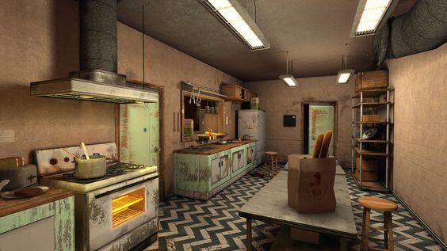

You decide to follow the games instructions, walking towards the kitchen. Swinging the door open, you observe your surroundings: outdated kitchen appliances, wooden countertops, and black and white tile flooring. On both sides of the room are two different doors, one that looks to be a small closet, and the other a freezer room to store perishable food. Which room do you go to?